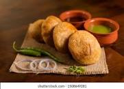

Kachori

Description
Kachori is a sweet dish dipped in sugar syrup. In Gujarat, it is usually a round ball made of flour and dough filled with a stuffing of yellow moong dal, black pepper, red chili powder, and ginger paste. In Delhi it is often served as chaat
Ingredients
- Flour
- Salt
- Ghee
- Moong dal
- Turmeric powder
- Ginger powder
Steps:
- Take 2 cups all purpose flour and salt in a bowl or pan. mix very well
- Add ¼ cup ghee
- With your fingertips mix the ghee with the flour for a few minutes till you get a breadcrumb like texture in the mixture.
- Add water in parts and knead the dough till soft.
- Cover the dough with a moist muslin or kitchen towel and let it rest for 30 minutes.
- Rinse ½ cup moong dal in a bowl. Soak moong dal with enough water for 2 hours
- Later drain all the water very well and add the soaked moong lentils in a grinder jar.
- Heat oil for frying and keep the flame to a low. When the oil is just hot enough, you can add the kachoris.
- Serve khasta kachori warm accompanied with some fried & salted green chilies.